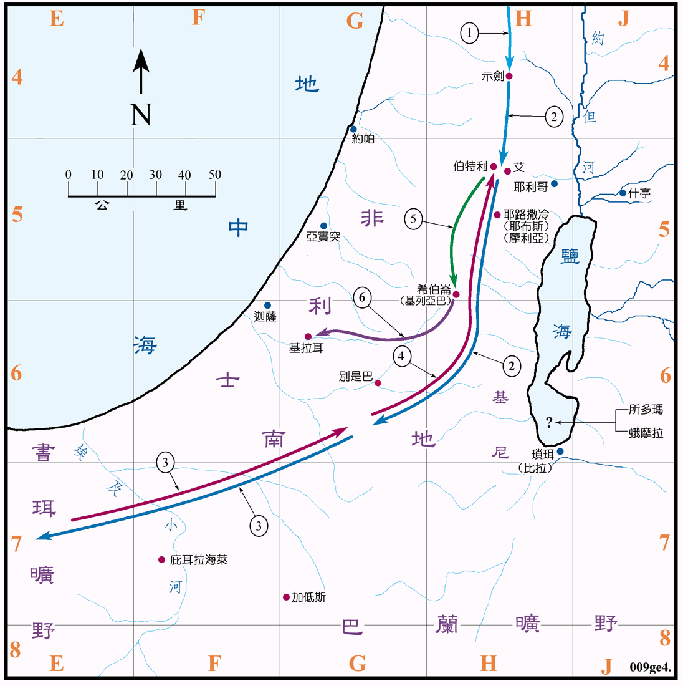

<创图04>亚伯拉罕的生平
2091～1991BC

行动线说明
| 序号 | 圣经 | 说明 |
|---|---|---|
| 1 | 创12:5 | 亚伯兰从吾珥经哈兰到迦南。(参看创图03) |
| 2 | 创12:6-9 | 先到了示剑，再到伯特利和艾的中间，又渐迁往南地去。 |
| 3 | 创12:10-13:1 | 因饥荒就去埃及，不久再回南地。(参看创图03) |
| 4 | 创13:3-13 | 又渐迁往伯特利，在伯特利时罗得离去。(参看创图05) |
| 5 | 创13:18 | 亚伯兰回希伯仑居住。 |
| 创14:13-24 | 亚伯兰追击北方四王，将罗得救回。(参看创图06) | |
| 创16:15-16 | 夏甲生以实玛利。(参创图07) | |
| 创17:1-21 | 耶和华与亚伯兰立约，令他改名叫亚伯拉罕，撒莱改名叫撒拉，并应许他们生一个儿子。 | |
| 创18:1-15 | 亚伯拉罕接待三个天使，天使预言次年撒拉必生一子。 | |
| 创18:16-33 | 天使奉命要毁灭所多玛等城，亚伯拉罕为他们祈求。(参看创图05) | |
| 6 | 创20章 | 亚伯拉罕迁往基拉耳。 |
| 创21:2-4 | 生以撒。(参看创图08) | |
| 创21:14 | 夏甲和以实玛利被逐。(参看创图07) | |
| 创21:22-34 | 亚伯拉罕与亚比米勒立约。 | |
| 创22:1-20 | 神试验亚伯拉罕，在摩利亚献以撒为燔祭。(参看创图08) | |
| 创23章 | 撒拉去世，葬在希伯仑的麦比拉。 | |
| 创24章 | 亚伯拉罕差遣仆人往拿鹤的城去为以撒娶妻。(参看创图03) | |
| 创25:1-4 | 亚伯拉罕又娶基土拉为妻，又生了六个儿子，后来打发众庶子往东方去居住。(参看创图03) | |
| 创25:7-11 | 亚伯拉罕去世，葬在希伯仑的麦比拉洞。 |
亚伯拉罕约於2166BC 出生，75岁时 (2091BC) 到迦南，隔了11年86岁的亚伯拉罕 (2080BC) 生以实玛利，在100岁时 (2066BC) 生以撒，於 (1991BC)175岁去世。
迦南地是一片起伏不平的山地，各城之间的交通很不方便，故易於防守，但却不利於统一，所以适合一些小的城邦国家独立发展。在亚伯拉罕到达之前的几个世纪，迦南地由於处在埃及和两河流域之间，而且是他们唯一的通道，文化深受两者之影响，所以一直都是一处文化水平甚高的地方，仅次於苏美和埃及。区内早已有示剑、艾城、耶利哥、伯特利、希伯仑、拉吉、伯善、米吉多等城市存在，大都有建造得很好、很厚的城墙。从出土的文物可得知，他们是在一种城邦型的政治下各自发展。但是在 2200BC 的左右，迦南地在入侵的半游牧民族，可能是在亚摩利人的手下，经历了一场大灾难，毁灭了几乎所有的大城镇，人口锐减，并且形成数个世纪的政治和人文的真空。所以当亚伯拉罕到达迦南之时，迦南已有相当高的文化水准，但人口稀少，在政治上似仍受埃及的辖制，只是影响力已大不如以往。当时似乎可随处搭建帐蓬及任意的放牧，并无人管制，足以证明土地空旷，居民不多。亚伯拉罕等常去的南地，就是希伯仑以南的地区，在今日，特别是别是巴以南的地带，既乾旱又炎热，不适於居住和农作，但是根据考古学家的证实，在主前十九世纪以前，南地有许多的城市，雨量也足，也就是说在那时的前后，确实是一处颇具吸引力的地方。
在另一方面，亚伯拉罕等人在迦南的两百年间，他们活动的范围多是在中部的山区的高地上，并未到加利利等地区去发展。